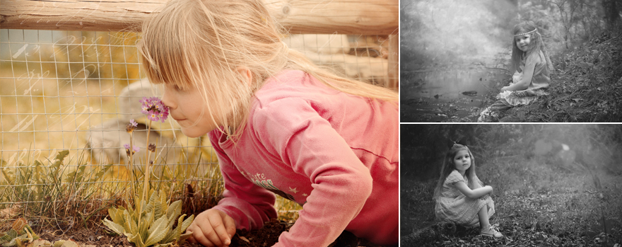

接孩子离开学校时的第一句话，将影响孩子一生！
时间：2017-11-06

别把孩子引导成受害者！
孩子有没有受到“欺负”，是很多家长都关心的问题，如果家长总是忍不住的问：
“今天和小朋友打架了吗？”
“今天有没有人欺负你？”
孩子就会奋力回顾这一天谁欺负过他，自己什么时候是不愉快的，就等于唤醒孩子去注意不好的事情。
为了满足家长的需要，孩子每天都会像完成作业一样向家长叙述这一天里的不愉快经历。它直接的后果是，造成孩子每天到班里去注意和寻找那些可能会“欺负”自己的人，孩子恐惧和害怕的目光，就会激起别的孩子产生要打他的想法，形成了所谓的吸引力法则。
一旦造成了这样的恶性循环，孩子真的就会成为一名“受害者”，这样的情况下，孩子不仅不愿意再去上学，甚至可能出现社交恐惧、行为退缩等后果，对孩子的一生都将产生深远的负面后果。
孩子“打架”没那么可怕！
儿童之所以被称为儿童，是因为他们不成熟，不成熟会带来很多我们成人不可理解的行为。我们可能将这些行为看成问题，如儿童的交往，当一方语言成熟度不够表达自己，也不知道如何解决自己跟别人的冲突时，他们就会采取最原始最直接的方法，那就是打或者推。
其实，在成长的过程中，即使孩子真的“打架”了，对孩子来说，都是一个很好的认知他人、认识自己行为后果的机会！这是孩子发展中的自然现象。当这种自然现象发生的时候，家长的态度很关键！
作为教育者，一定要注意唤醒孩子去发现对成长有正面意义的事情，避免孩子去注意对成长没有价值的事情。